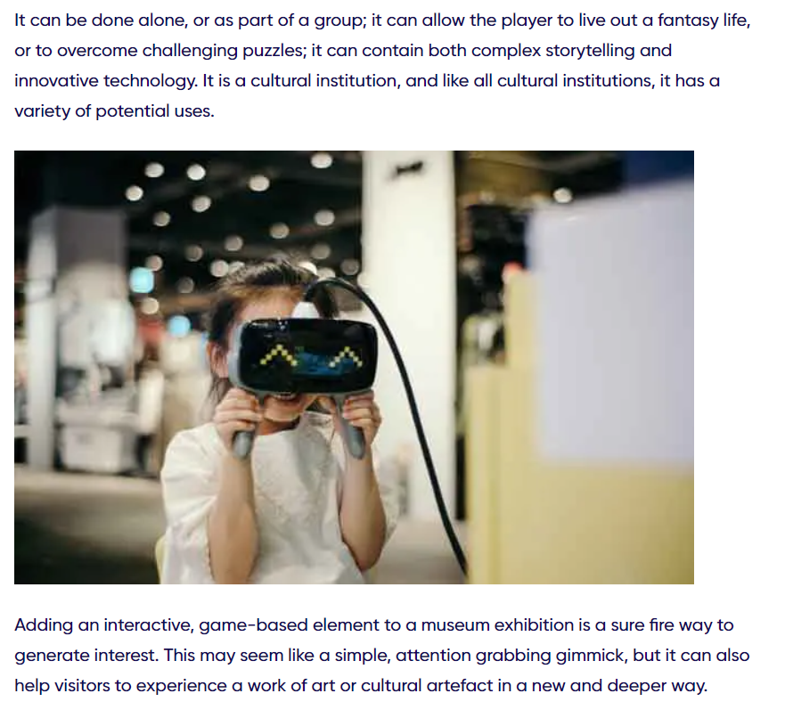
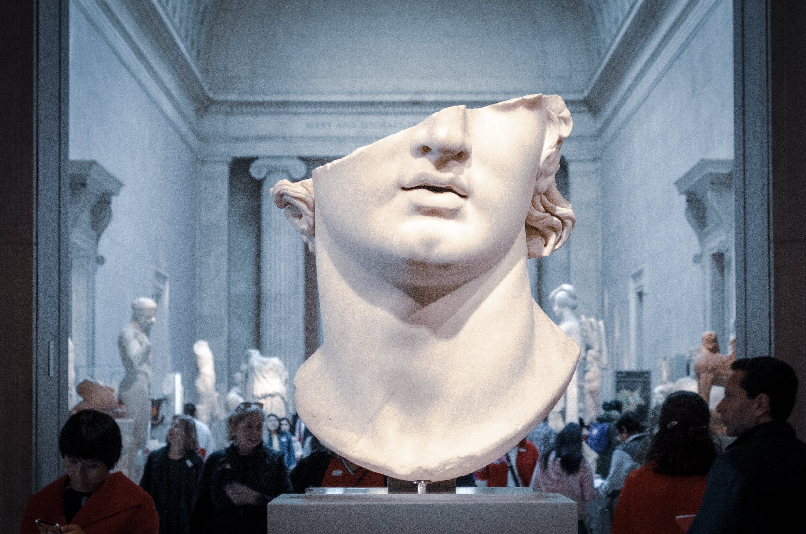
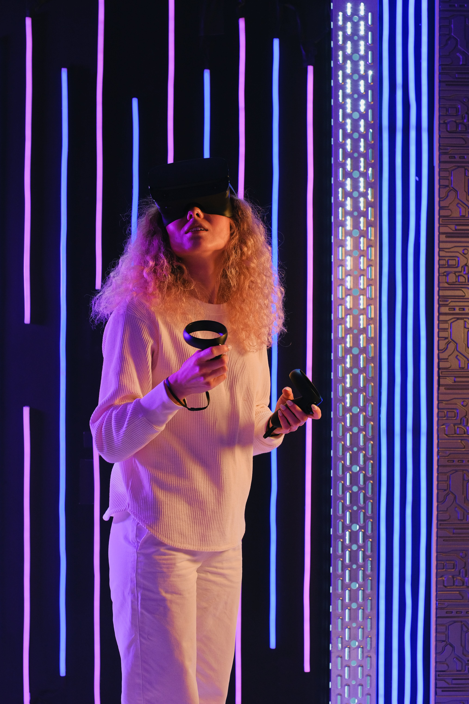
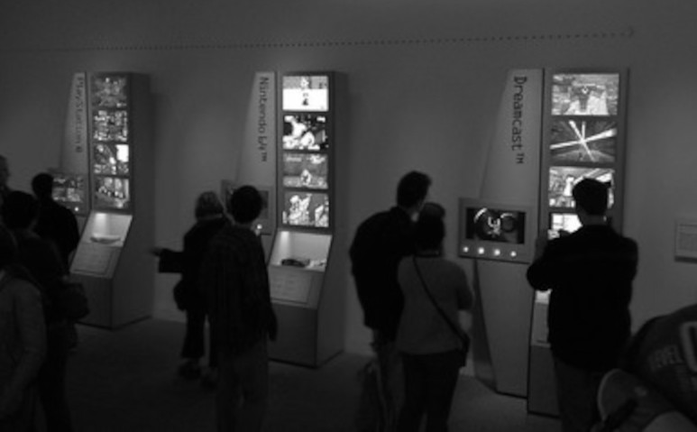
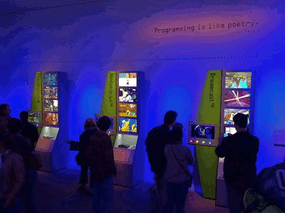
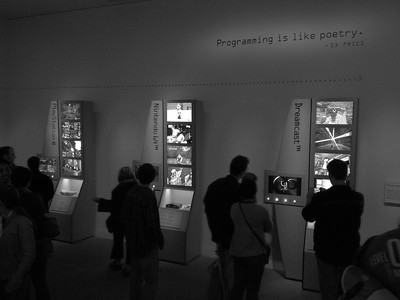
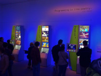
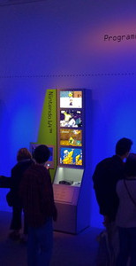

Independent Learning
The Creative Process
Preparation
In week 1 the Preparation task began by looking up key words and thinking about my target audience by creating a persona who would view the site. My example was a woman in her 40s who doesn't
fully understand how video games is not just shooting games for teens and that word games and others such as candy crush can also be used.
Incubation
Brainstorming began in week 2 when analysing the websites of the white house official website and HDROC.com and analysing how they are built and understood.
Looking at different websites help to clear my focus of what I wanted to fully do my website on and how I want it to look.
Ideation
Ideation moment came from my consultation. Through this meeting I gained a clearer idea of what I wanted to do and what message and audience I should aim for. After having this meeting in week 3, my focus became a lot clearer and more understandable. Then went and tidied up earlier lab tasks in this portfolio to reflect my new target.
Evaluation
Currently I would say this task is my evaluation, by going in depth into the creativity process. This analysis has helped me reflect on the entire design process.
Implementation
This portfolio is proof of all my implementation so far. As I continue to work on it the design and layout will improve.

This image in very appropriate for the website. It is used for aesthetics and is used to retain attention as it is near the end of the article. It is also a Raster Image as it is photo realistic.
Image by Stardesigner - Tom Rengelshausen; Verein WEINXTRA, found at Wikimedia.org

Image by Jose Antonio Gallego Vazquez, found at Pexels.com

Image by SHVETS Production, found at Pexels.com
Lab Task

This image is originally featured in Week 1 as an example of inputting images into HTML. This image has now been edited to have a smaller file size.
This has been achieved by putting the image into greyscale, cropping and lowering the resolution. Given that the original file was small in size, these changes were not needed,
and just lessened the image quality unnecessarily, creating a worse user experience.
I would rate this image 4, marginal on the fidelity criteria scale, all changes made the image worse to the extent that it isn't nice to look at,
which is a main feature of an image.
The original image I would rate 1, Excellent on the fidelity scale as I can see no way to improve on it. All the colours and vibrant and clear and the file size is small.


The inverted colours image and the greyscale image.


The scaled down image and the cropped image.
{kind=link}